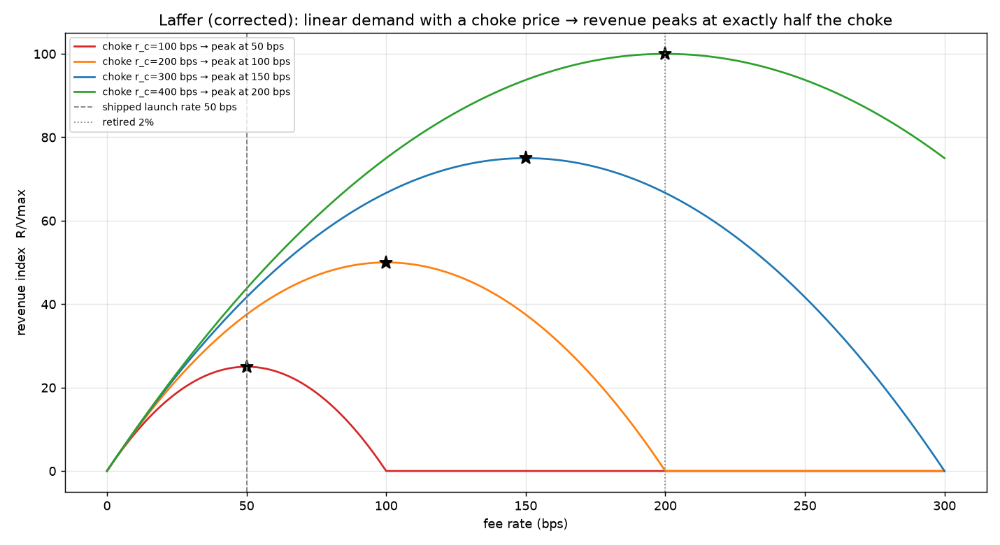
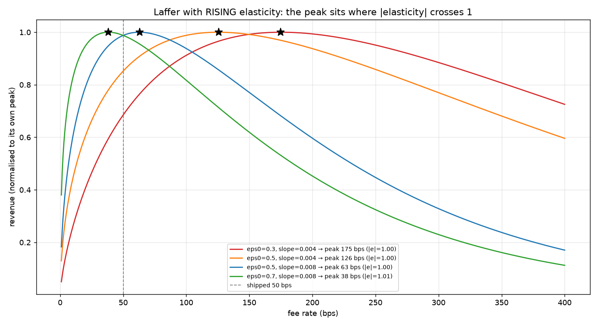
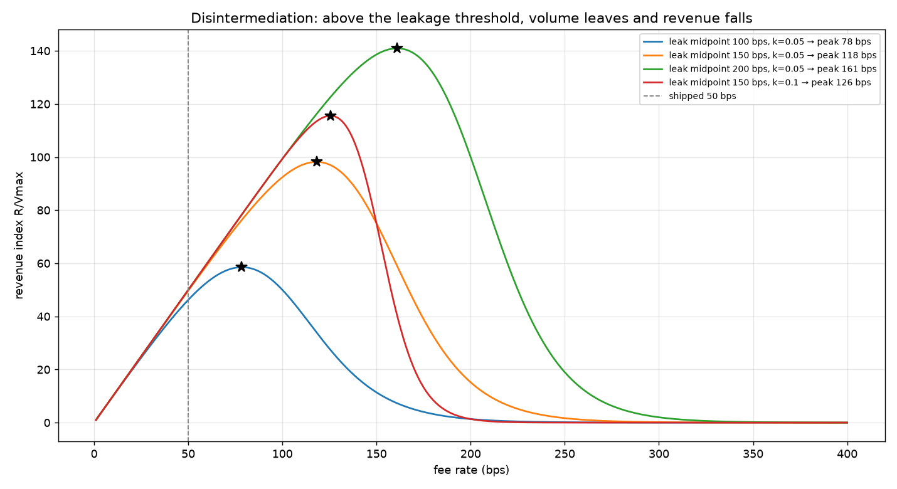
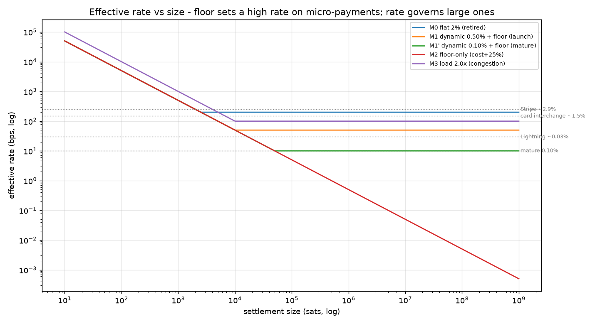
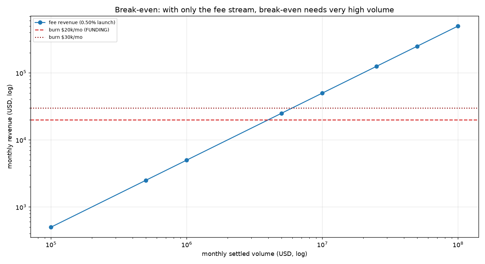
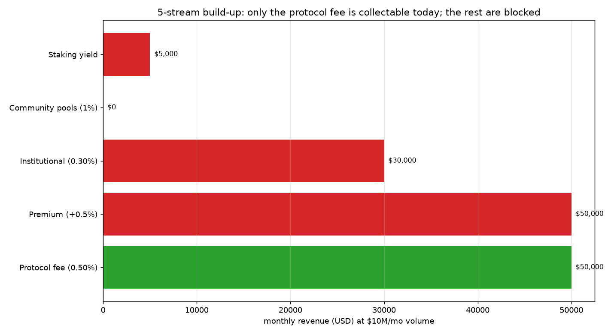
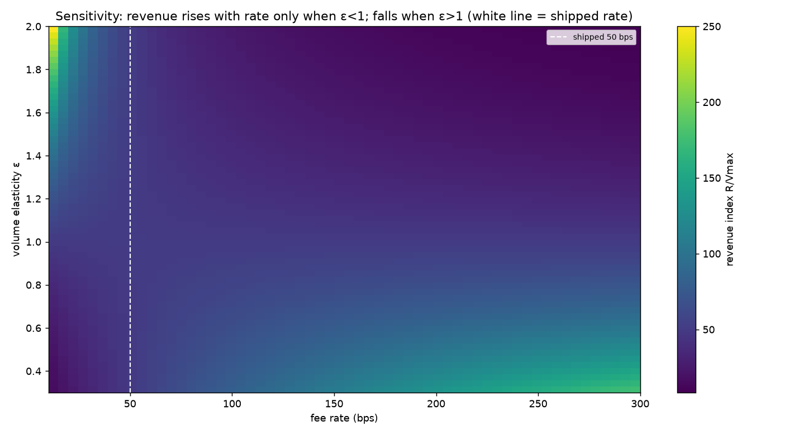
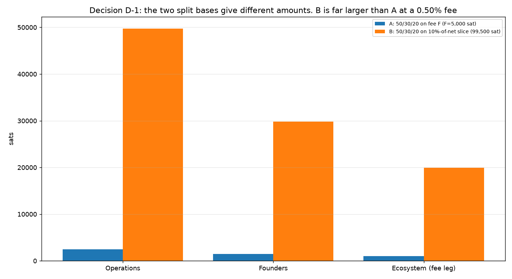

Meso: Laffer with a choke price (corrected)
Linear demand peaks at exactly half the choke price. Replaces the withdrawn '69 bps' isoelastic claim.

Laffer with rising elasticity
The realistic shape: the peak sits where |elasticity| crosses 1.

Disintermediation (the real ceiling)
Above the leakage midpoint, volume leaves and revenue falls. 50 bps sits below it.

The floor is regressive
Small jobs pay a higher effective rate than large ones (cost recovery, by design).

Micro: fee vs settlement size
Floor dominates micro-payments; rate dominates macro.

Effective rate vs size
Never zero, never above the headline rate on large jobs.

Cost recovery floor
Every rail: fee >= cost x 1.25 (verified exact, all 8 rails).

Scaling economics
Network value ~ n^2; revenue ~ n. Capture ratio falls as 1/n.

Macro: BTC denomination
USD-priced: stable. Sat-priced: hidden escalator.

Break-even
With only the fee stream, break-even at $20k burn needs ~$4.0M/mo volume.

5-stream build-up (corrected)
Only the protocol fee is collectable today; the rest are blocked. Doc's $220.8k is a 2%-era figure.

Sensitivity: revenue vs (rate, elasticity)
Revenue rises with rate only when elasticity < 1.

Full system: one settlement
Where a 1,000,000-sat settlement goes.

Decision D-1: split basis
50/30/20 on fee F vs on 10%-of-net: a 19.9x difference.
